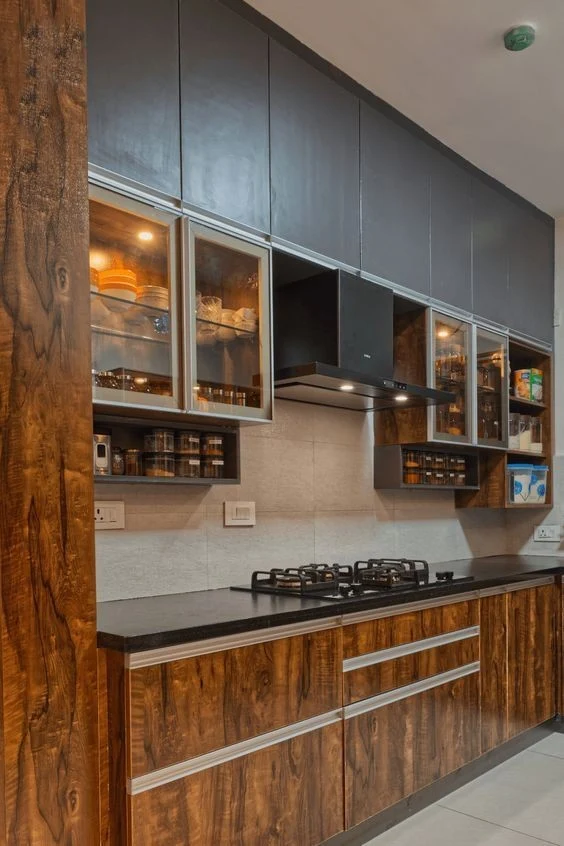

THE JOURNAL / PLANNING / 06
A calm living room with room for real life
Choose the main purpose of the room
A living room may be used for family conversation, television, guests, reading or a mixture of activities. Tell the designer which matters most. If the room is also the route between the entrance and other spaces, mention how people move through it. The layout should respond to these uses before decorative elements are selected. A picture can suggest a mood, but it cannot describe your family's movement and routines.
Think about an ordinary evening and a day when guests visit. The seating you need may be different in each situation. Explain whether occasional seating can be brought in from another room and whether someone needs a preferred seat for comfort or access. A flexible plan can then be discussed using real requirements rather than an assumed number of sofas.
Decide what deserves attention
Too many competing features can make a room difficult to read. Identify the element you most want to enjoy: a view, a piece of art, a seating arrangement or a display of objects that matter to you. The designer can organise other choices around that priority. This does not mean every room needs a dramatic feature wall. A quiet arrangement may suit the household better.
Choose what you wish to display and what you prefer to put away. Books, toys, chargers and everyday bags need consideration alongside decorative objects. If storage is part of the brief, explain the items it must hold. A finished photograph usually shows a room at its tidiest; your design should also work on an ordinary busy day.
Review comfort and circulation together
Place retained furniture in the proposed plan with its real dimensions. Consider the route from the entrance, the access to windows and the movement around tables. Ask the designer to explain any tight areas using the measured plan. A layout should be assessed at the site, especially when existing furniture is part of the project. Do not rely only on how spacious a perspective image appears.
Discuss how different activities affect lighting and power needs. Reading, television and conversation may call for different arrangements. Relevant professionals should check the technical requirements and installation. Tell the designer where devices are normally charged and what equipment you use so that daily needs can be considered before finishes are completed.
Create a finish direction you can maintain
Bring a small set of reference pictures and explain what you like in each one. You may like the softness of the colours in one image and the storage arrangement in another. This is more useful than asking for a whole room to be copied. Discuss the care requirements of proposed finishes and fabrics with the appropriate suppliers, especially where children, pets or heavy use affect the choice.
Keep the finish decision connected to the rest of the home. A living room does not have to match every room exactly, but transitions should feel intentional. Review visible combinations together before approval. Record the selected references so that the final result is judged against the agreed scheme rather than a collection of changing phone images.
Leave space for the household to grow
Ask which items can be added later without disturbing major work. You may prefer to begin with the main layout and essential furniture, then choose art or accessories after living in the room. That decision should be deliberate. A thoughtful living room can feel complete without filling every wall and corner on the first day.
Suggested article action: Share how your family uses the living room and which existing furniture you would like GS INTERIOR STUDIO to consider.
10 visual references
Recovered images from gsinteriorstudio.com. Used as inspiration; images repeat across articles and are not presented as verified project case studies.


